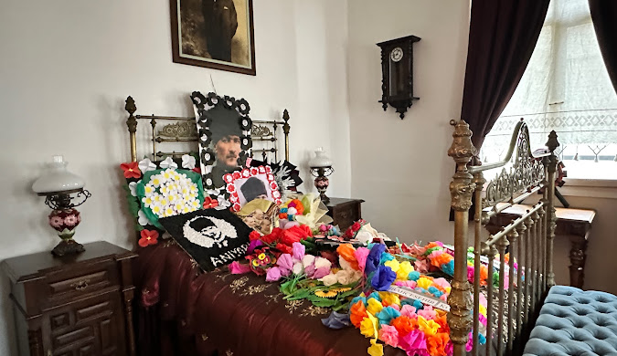

Atatürk Evi Müzesi
Rize - Atatürk Müzesi, Osman Mataracı'ya ait tarihi evde, 1984 yılında düzenlenmiş ve ziyarete açılmıştır.

Atatürk, 1924 yılı Eylül ayında "Atatürk'ün Sonbahar Gezisi" olarak bilinen birkaç ay süreli bir geziye çıkmış, bu gezi sırasında Karadeniz illerini ziyaret etmiştir. İşte bu gezi günlerinde Atatürk, beraberinde eşe Latife Hanım, birkaç milletvekili olduğu halde 17 Eylül 1924 gürü Trabzon'dan Hamidiye Vapuru ile Rize'ye gelmiş, Rize de coşkun gösterilerle karşılanmıştır. O geceyi Rize'de Mataracı Mehmet Bey'in evinde geçiren Atatürk, ertesi günü şehirde bazı ziyaretlerde bulunmuş, incelemeler yapmış, saat 16.30'da ayni vapurla Giresun'a hareket etmiştir.
Rize'de Atatürk'ün bir gece konuk olduğu ev, daha sonra sahibi Mehmet Mataracı'Dan yeğeni Osman Mataracı'ya geçmiştir. Atatürk'ün 100. Ölüm yıldönümü dolayı sile Atatürk Müzesi yapılmak üzere, Osman Mataracı evini Rize Özel İdaresine bağışlamıştır. 1984 yılında Kültür Bakanlığına devredilen ev, onarılarak Atatürk Müzesi halinde düzenlenmiş ve ziyarete açılmıştır. Evin bir bölümü de Kültür Merkezidir.
.png)